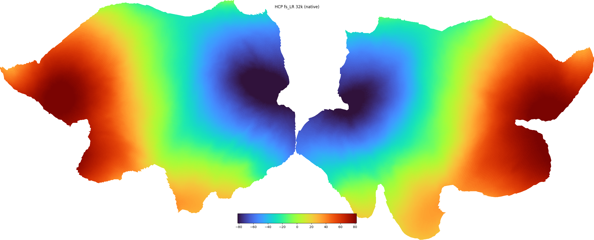
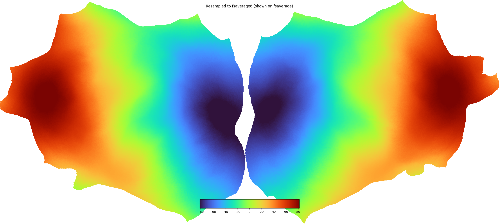

Note
Go to the end to download the full example code.
Visualize HCP fs_LR data on the HCP template and on fsaverage¶
This example shows how to:
visualize data defined on the HCP fs_LR 32k surface directly on the HCP template (the
32k_fs_LRpycortex subject), andresample that data to fsaverage6 with
cortex.hcpand visualize it as a flatmap.
Both steps produce a flatmap.
Notes¶
The first time you run this, the
32k_fs_LRandfsaveragesubjects are downloaded into your pycortex filestore.The resampling matrix is built from the HCP standard-mesh spheres, which are downloaded on demand (no Connectome Workbench needed).
fsaverage6 is not itself a renderable pycortex subject, so the fsaverage6 result is upsampled to the full
fsaveragesurface for display usingcortex.freesurfer.upsample_to_fsaverage(). The fsaverage5/6 upsampling tables ship with pycortex, so no FreeSurfer installation is needed.


Downloading from: https://ndownloader.figshare.com/files/66442049
Downloading subject 32k_fs_LR to /tmp/tmpiv2uan66
Done downloading to /tmp/tmpiv2uan66/32k_fs_LR.tar.gz
Extracting subject 32k_fs_LR to /home/runner/work/pycortex/pycortex/filestore/db
Generating a flatmap cache
fsaverage6 data shape: (81924,)
Downloading from: https://ndownloader.figshare.com/files/17827577?private_link=4871247dce31e188e758
Downloading subject fsaverage to /tmp/tmpqarb9ukr
Done downloading to /tmp/tmpqarb9ukr/fsaverage.tar.gz
Extracting subject fsaverage to /home/runner/work/pycortex/pycortex/filestore/db
Generating a flatmap cache
import matplotlib.pyplot as plt
import numpy as np
import cortex
import cortex.hcp
# ---------------------------------------------------------------------------
# a) Visualize data on the HCP fs_LR 32k template
# ---------------------------------------------------------------------------
hcp_subject = "32k_fs_LR"
# Make sure the HCP template is in the pycortex filestore, downloading if not.
if hcp_subject not in cortex.db.subjects:
cortex.hcp.download_fs_lr()
# Create some smooth demo data on the full fs_LR 32k surface (64984 vertices,
# both hemispheres, medial wall included). Here we use the anterior-posterior
# (y) coordinate of the inflated surface as a smooth gradient. For real HCP
# data stored as CIFTI grayordinates, expand it to the full surface first with
# ``cortex.hcp.cifti_to_surface`` (or go straight to fsaverage with
# ``cortex.hcp.to_fsaverage``).
pts, _ = cortex.db.get_surf(hcp_subject, "inflated", merge=True)
data_fslr = pts[:, 1].astype(float)
vmin, vmax = np.percentile(data_fslr, [1, 99])
# Visualize on the HCP template just like any other vertex dataset.
vtx_hcp = cortex.Vertex(data_fslr, hcp_subject, vmin=vmin, vmax=vmax, cmap="turbo")
cortex.quickshow(vtx_hcp, with_curvature=True, with_rois=False, with_labels=False)
plt.gcf().suptitle("HCP fs_LR 32k (native)")
# ---------------------------------------------------------------------------
# b) Resample the same data to fsaverage6 and visualize it
# ---------------------------------------------------------------------------
# Project fs_LR 32k -> fsaverage6 (81924 vertices, both hemispheres).
data_fs6 = cortex.hcp.project_fslr_to_fsaverage(data_fslr, target="fsaverage6")
print("fsaverage6 data shape:", data_fs6.shape)
# fsaverage6 is not a renderable pycortex subject, so upsample the fsaverage6
# result to the full fsaverage surface for the flatmap.
if "fsaverage" not in cortex.db.subjects:
cortex.download_subject("fsaverage")
data_fs = cortex.freesurfer.upsample_to_fsaverage(np.nan_to_num(data_fs6), "fsaverage6")
vtx_fs = cortex.Vertex(data_fs, "fsaverage", vmin=vmin, vmax=vmax, cmap="turbo")
cortex.quickshow(vtx_fs, with_curvature=True, with_rois=False, with_labels=False)
plt.gcf().suptitle("Resampled to fsaverage6 (shown on fsaverage)")
plt.show()
Total running time of the script: (0 minutes 27.056 seconds)